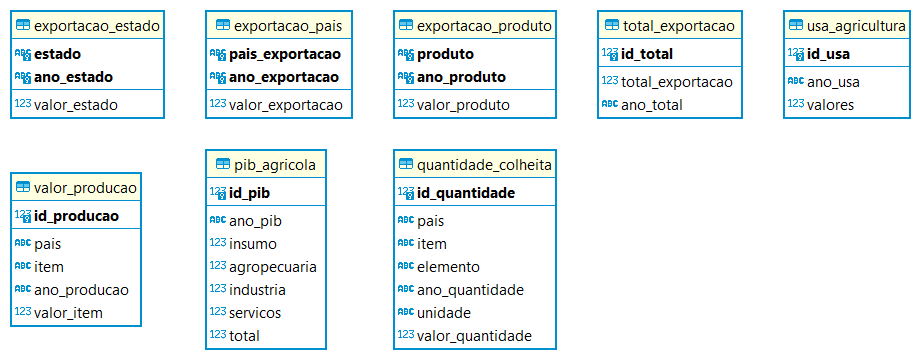

SoulCode Academy
Documentação do Projeto Final - Agricultura
Turma BC8 - Engenharia de Dados
Integrantes do grupo:
Eduardo Teles | Joyce Meireles | Juliana Maciel | Sandro Gonçalves | Wesley Aranha
Case do Projeto:
O objetivo desse projeto é reunir Datasets do tema agricultura e desenvolvimento rural do Brasil, realizar o processo de ETL e usar os dados para mostrar as vantagens da agricultura 4.0, realizando uma migração de dados em um banco relacional (Postgre) para um banco não relacional (Cassandra), utilizando a plataforma em nuvem do Google (Googlo Cloud Platform - GCP) e a utilização da interface PySpark para a leitura dos registros, e com isso, extraír as informações para analisar e obter insights que ajudem na tomada de decisão de um possível projeto ou empresa.
Etapas do projeto:
Todo o projeto foi construído na Google Cloud Platform, seguindos as etapas abaixo:
- Escolha das tecnologias/ferramentas utilizadas
- Escolha dos Datasets
- Criação do BD Postgre
- Tratamento inicial dos datasets e inserção no Postgre
- Seleção dos dados no Postgre e criação dos Parquet
- Criação do BD Cassandra
- Inserção dos Parquet no Cassandra
- Análise e criação de gráficos
- Documentação
1- Tecnologias/Ferramentas utilizadas no projeto:
- O Banco de dados relacional utilizado foi o Postgre;
Vantagens do Postgre sobre o MySQL
Foi escolhido o Postgre por sua escalabilidade e robustez,suporta bases de dados grandes, complexas com tamanhos ilimitados de linhas, bancos de dados e tabelas (até 16TB), aceita vários tipos de sub-consultas, possui mais tipos de dados e conta com um bom mecanismo de FAILSAVE (Segurança contra falhas, por exemplo no desligamento repentino do sistema), e garante escalabilidade e confiança.
Fonte da informação (clique aqui)
- O Banco de dados não relacional utilizado foi o Cassandra;
Vantagens do Cassandra sobre o MongoDB
Se você trabalha com uma grande quantidade de dados e precisa de velocidade para armazenar esses dados, você pode escolher o Cassandra.
Se você precisa de uma rápida leitura dos dados, os dois bancos são ideais para você.
Se você já tem conhecimentos em SQL e quer continuar a utilizar uma linguagem bem semelhante, você pode escolher o Cassandra.
Se você vai trabalhar com uma grande quantidade de dados e precisa de uma grande velocidade de gravação e leitura, você pode escolher o Cassandra.
Fonte da informação (clique aqui)
-
O módulo utilizado para a conexão com o Postgre foi o Psycopg2;
-
A API JDBC foi utilizada para a conexão com o Postgre e Cassandra;
A JDBC (Java Database Connectivity), faz o envio de instruções SQL para qualquer banco de dados relacional, desde que haja um driver que corresponda ao mesmo presente.
Outra das vantagens da JDBC é o fato dela funcionar como uma camada de abstração de dados. Independente do SGBD utilizado, a API será a mesma, facilitando muito a vida dos programadores caso haja a necessidade de uma migração de banco.
Fonte da informação (clique aqui)
-
O módulo do Pandas no Python foi utilizado para o tratamento dos datasets;
-
A interface Pyspark foi utilizada para criar os parquet e tratar os dados;
O Apache Spark é uma engine de computação unificada e um conjunto de bibliotecas para processamento de dados paralelos em clusters de computadores.
Uma das grandes vantagens do Spark é ser capaz de trabalhar de forma distribuída. Isso significa que se tratando de conjuntos de dados muito grandes ou quando a entrada de novos dados acontece de forma muito rápida, pode se tornar demais para um único computador. É aqui que entra a computação distribuída. Em vez de tentar processar um enorme conjunto de dados, essas tarefas são divididas entre diversas máquinas que estão em constante comunicação entre si. Em um sistema de computação distribuído, cada computador individual é chamado de nó (node) e a coleção de todos eles é chamada de cluster.
Muito da popularidade do Spark se deve aos fatores listados abaixo: - Suporta diferentes linguagens de programação como Java, Python, Scala e R. - Possibilita streaming de dados em tempo real. - É possível rodar em uma única máquina assim como em grandes clusters de computadores. - Suporta SQL. - Possui bibliotecas para criar aplicações com Machine Learning, MLlib. - Realiza processamento de dados em grafos com GraphX. - É uma ferramenta open-source.
Fonte da informação (clique aqui)
Porque utilizar o formato parquet?
Usamos Parquet que é um armazenamento em colunas em geral - Para armazenar dados por colunas para otimizar o desempenho de consultas analíticas e diminuir o custo de armazenamento.
Fonte da informação (clique aqui)
- As ferramentas utilizadas na GCP foram: Cloud Storage, Dataproc, Postgre, Cassandra(Google click to deploy), Compute Engine, IDE Jupyter;
- Utilizamos o módulo Matplotlib e HTML para a criação dos gráficos e análises;
- Utilizamos Markdown para a criação da documentação;
- A apresentação foi feita no Canvas.
2- Escolha dos Datasets:
Ao todo foram encontrados e escolhidos os seguintes Datasets:
- Exportação X Países (AGROSTAT) - Dados: 227
- Exportação X Categoria de produtos (AGROSTAT) - Dados: 26
- Exportação X UF (AGROSTAT) - Dados: 33
- PIB Brasil (CEPEA-PIB Brasil) - Dados: 25
- U.S. Department of Agriculture (USDA) - Dados: 112
- Value of Agricultural Production (FAOSTAT) - Dados: 3.213.519
- Crops and livestock products (FAOSTAT) - Dados: 3.807.009
Total de dados: 7.020.951
3- Criação do BD Postgre:
Construímos o BD Postgre para ter 8 tabelas e 7 trigger functions que receberam os dados dos datasets.
O Diagrama Entidade Relacionamento do BD Postgre se encotra a seguir:

As Trigger Functions foram utilizadas para realizarem determinados tratamentos nos dados quando inseridos no Banco.
1- Exemplo de uma das Trigger Functions que foram utilizadas:
CREATE OR REPLACE FUNCTION alterar_valor()
RETURNS trigger AS
$$
BEGIN
UPDATE pib_agricola SET insumo = (New.insumo * 1000000) WHERE id_pib = New.id_pib;
UPDATE pib_agricola SET agropecuaria = (New.agropecuaria * 1000000) WHERE id_pib = New.id_pib;
UPDATE pib_agricola SET industria = (New.industria * 1000000) WHERE id_pib = New.id_pib;
UPDATE pib_agricola SET servicos = (New.servicos * 1000000) WHERE id_pib = New.id_pib;
UPDATE pib_agricola SET total = (New.total * 1000000) WHERE id_pib = New.id_pib;
RETURN NEW;
END;
$$
LANGUAGE 'plpgsql';
CREATE TRIGGER tgr_pib_agicola_update
AFTER INSERT
ON pib_agricola
FOR EACH ROW
EXECUTE PROCEDURE alterar_valor();
4- Tratamento inicial dos datasets e inserção no Postgre:
Os tratamentos dos datasets foram realizados com o módulo do pandas do Python e com as Trigger Functions criadas no BD Postgre.
Alguns dos exemplos de tratamentos com o pandas que utilizamos:
1- Exclusão de colunas:
df.drop(columns =['Area Code', 'Item Code', 'Element Code','Year Code', 'Flag'], axis =1, inplace = True)
2- Transposto de um DataFrame e a redefinição do índice do mesmo:
pais = pais.T.reset_index()
3- Preenchimento dos valores vazios com o valor "0":
pais = pais.fillna(0)
Para a inserção no Postgre, foi utilizado o módulo psycopg2 e criamos a Classe Connectar com os dois métodos de inserção, listados abaixo:
1- Método utilizado para a inserção individual de valores:
def inserir(self, table, parametros, valores):
query = f"INSERT INTO {table} ({parametros}) VALUES ({valores})"
self.acao(query)
2- Método utilizado para a inserção de múltiplos valores:
def inserir_multiples(self, table, parametros, valores):
query = f"INSERT INTO {table} ({parametros}) VALUES {valores}"
self.acao(query)
Desafio encontrado nessa etapa do projeto:
No momento da inserção do maior CSV, com mais de 3 milhões de dados, tivemos que realizar essa inserção em blocos de dados e a nossa solução é apresentada no código abaixo:
try:
df3 = c1.ler_csv('gs://desafio-agricultura/CSV/quantidade(FAO)_final.csv')
df3.drop("Unnamed: 0", axis=1, inplace=True)
df3 = df3.fillna(0)
tam = df3.shape[0]
k = 0
j = 500000
while True:
arr = np.array(df3)
valores = []
if j > 3000000:
j = 3000000 + (tam - 3000000)
for i in arr[k:j]:
item = (i[0], i[1], i[2], i[3], i[4], i[5])
valores.append(item)
valores = str(valores)[1:-1]
# print(lista_antes)
c1.inserir_multiples('quantidade_colheita','pais, item, elemento, ano_quantidade, unidade, valor_quantidade', valores)
if j == tam:
break
j += 500000
k += 500000
except Exception as e:
print(e)
5- Seleção dos dados no Postgre e criação dos Parquet:
Para a seleção dos dados presentes no Postgre, utilizamos a API JDBC e a interface Pyspark que nos permitiu usar o Spark por meio da linguagem Python. Em uma mesma função(mostrada abaixo) conseguimos ler as informações e transformá-las em Parquet.
1- Método utilizado para selecionar os dados no BD Postgre e gerar os parquet:
def read_transform_parquet(table_name, path_parquet):
url = 'jdbc:postgresql://34.95.140.217:5432/desafio_final'
properties = {
'user': 'postgres',
'password': 'root',
'driver': 'org.postgresql.Driver'
}
df = spark.read.jdbc(url=url, table=table_name, properties=properties)
df.write.parquet(path_parquet)
return f"Parquet add in {path_parquet}"
6- Criação do BD Cassandra:
No BD Cassandra foram criadas 8 tabelas que receberam os dados presentes no Postgre. Abaixo segue o código da criação da Keyspace e de uma das tabelas criadas:
1- Código da criação do Keyspace:
create keyspace if not exists desafio_agricultura;
with replication = {'class': 'SimpleStrategy', 'replication_factor': 1};
2- Código da criação da tabela do PIB agrícola Brasileiro:
CREATE TABLE IF NOT EXISTS "desafio_agricultura"."pib_agricola" (
id_pib int primary key,
ano_pib text,
insumo float,
agropecuaria float,
industria float,
servicos float,
total float
);
7- Inserção dos Dados (parquet) no Cassandra:
Para a inserção dos dados no BD Cassandra, utilizamos a API JDBC para realizar a conexão com o Banco e Pyspark para leitura e tratamento dos dados.
1- Código que realiza a conexão com o Banco de Dados Cassandra:
spark = SparkSession\
.builder\
.appName("Spark Exploration App")\
.config("spark.jars.packages", "com.datastax.spark:spark-cassandra-connector_2.12:3.1.0")\
.config("spark.sql.extensions","com.datastax.spark.connector.CassandraSparkExtensions") \
.config("spark.cassandra.connection.host","172.17.0.4") \
.config("spark.cassandra.connection.port","9042") \
.getOrCreate()
2 - Método que realiza a inserção no Cassandra:
def saveData(df, table):
df.write \
.format("org.apache.spark.sql.cassandra") \
.option("keyspace", keyspace) \
.option("table", table) \
.mode('append') \
.save()
8- Análise e criação de gráficos:
Para as análises e a criação dos gráficos, utilizamos as bibliotecas Matplotlib e Seaborn presente no Python e o Google Charts/JavaScript. Alguns exemplos dos gráficos gerados podem ser acessados na aba Análise gráfica.
9- Documentação:
Nossa documentação foi feita em Markdown.